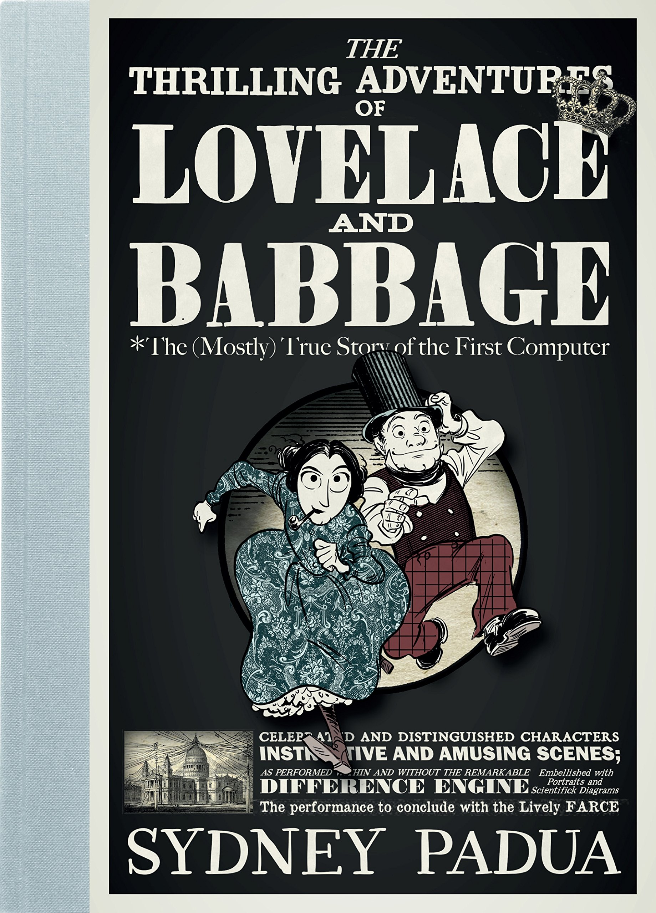

Better Stories, Better Languages
What Would Alyssa P. Hacker Do?
François-René Rideau, TUNES Project
LambdaConf 2017, 2017-05-xx
http://github.com/fare/better-storiesStories
 |  |  |  |
 |  |  |
Universal Stories
|  |  |  |  |
| Boy Meets Girl | Man Eats Forbidden Fruit | Novice Grows into Master | Horror Hidden at Home |
Programming Stories
 See also my SDR2017 talk
See also my SDR2017 talk
From Software Creationism to Software Evolutionism
The Take Home Points
Stories matter
Software tools imply a story, and vice versa
Better tools via better stories
Explicit stories are a great meta-tool...
Pairs of Stories
Take a sad so-o-ong,
and make it be-e-etter
Let's start with a couple easy ones you already know...
| Question | How to fund software? | How to fund programming? |
|---|---|---|
| Issue | Software costly to produce | Starved coders don't code |
| Story | own & sell scarce software vendors & customers | own & sell scarce labor contributors & users |
| Tools | Proprietary Software Closed binaries | Free Software Open Source |
Sad... | Better! |
I disagree!
It's OK to be wrong (for you, for me)
Maybe one story isn't always better
But can we agree that stories usually matter?
Slightly different stories → vastly different outcomes
Simple Programming Stories
| Question | Decompose programs? | Decompose programming? |
|---|---|---|
| Issue | Software too large for one brainful | Cooperation needed by many brains |
| Story | Hierarchy of components by fully informed expert | Propagate partial info along network of people, projects |
| Tools | Flowcharts, UML Top-down management | SW distributions, forums Distributed version control |
Sad... | Better! |
| Question | Achieve great software? | Foster better programming? |
|---|---|---|
| Issue | Improving software is hard | Improving ourselves is hard |
| Story | Disseminate expertise Restrict modules to experts | Learn from experience Cultivate good incentives |
| Tools | Standards Segregation by expertise | Communities Competition in markets |
Sad... | Better! |
Programming Language Stories
| Question | Make device programmable | Express programming ideas |
|---|---|---|
| Issue | Expose device features | Convey human meanings |
| Story | PLs are for machines | PLs are for humans |
| Tools | match device capabilities Turing tar pit | match human cognition minimize complexity |
Sad... | Better! |
| Question | Handle repetitive code | Remove coding drudgery |
|---|---|---|
| Issue | Lots of repetition in code | Drudgery in programming |
| Story | Language as given Programmer as drudge | Language as evolving Programmer as thinker |
| Tools | Informal Design Patterns Plan more drudgery | Formal Metaprograms Evolve language |
Sad... | Better! |
| Question | Have an extensible syntax? | Explore useful syntaxes? |
|---|---|---|
| Issue | Hooks into existing syntax | Best express each fragment |
| Story | Side-effect One True Syntax | Pure grammar increments |
| Tools | Global macros Global readtable | Scoped syntax specification Racket languages, OMeta |
Sad... | Better! |
| Question | Users ≠ Programmers | Using = Programming |
|---|---|---|
| Issue | Two paradigms, UI vs PL | One PL, spoken or written |
| Story | Dumbing down for Users All-Power for Devs (in VM?) | One computer interaction Continuum of proficiency |
| Tools | Unrelated UI and PL Segregation | Integrated interface PL levels and dialects |
Sad... | Better! |
| Question | P'er ≠ PL Implementer | P'ing = PL Implementing |
|---|---|---|
| Issue | Writing a compiler is hard | Modular DSL increments |
| Story | Specialists implement PL Mere programmers use PL | Special case of U = P Each P is PL spoken by U |
| Tools | Closed PL implementations Few, magic, PLs | First-class implementations Lots of DSLs |
Sad... | Better! |
| Question | PL Definer ≠ Implementer | PL Defining = Implementing |
|---|---|---|
| Issue | Designing a PL is hard | Specify = Implement |
| Story | Specialists define big PL Others implement | Declarative specification Orthogonal impl. strategies |
| Tools | Standard for language Decades-old design | Grammatical mixins Pervasive experimentation |
Sad... | Better! |
| Question | Get a specialized language? | Specialize conversation? |
|---|---|---|
| Issue | Heterogeneous activities | Express domain expertise |
| Story | Each domain its experts Segregation of experts | One brain, many topics Adapt PL to domain |
| Tools | External DSLs Scripting languages | Internal DSLs Contexts of universal PL |
Sad... | Better! |
Programming Quality Stories
| Question | Get Programs Debugged | Explore Program Semantics |
|---|---|---|
| Issue | Program bugs need fixed | Semantics isn't obvious |
| Story | Bugs are exceptions Ad-hoc tools retrofitted | Imperfection is the default Exploration is normal |
| Tools | Low-level debugger Ad-hoc debug info | Compiler as reversible lens Experiment in Virtual World |
Sad... | Better! |
| Question | Secure existing software? | Build software securely? |
|---|---|---|
| Issue | Security its own expertise | Security as aspect of Design |
| Story | Security as afterthought Independent Sec. experts | Sec part and parcel of P Programmer education |
| Tools | Forever patch leaks Low-level protection | Whole-system design High-level capabilities |
Sad... | Better! |
| Question | Dealing with catastrophes? | Eliminating catastrophes? |
|---|---|---|
| Issue | Bad manip. → Data loss | Bad manip. unexpressible |
| Story | Exceptional catastrophes | Everyday trivial failures |
| Tools | Confirm menus, remove bin Expensive ad hoc "Undo" | Monotonic storage Universal infinite undo |
Sad... | Better! |
More Programming Stories
| Question | Document conventions | Agree on responsibilities |
|---|---|---|
| Issue | Define module interfaces | Define team interfaces |
| Story | PL as given, modules fixed PL limit expressible intent | Extend PL, trade modules Express if benefit > cost |
| Tools | Informal contracts Fixed team boundaries | Formalize contracts Negotiate responsibilities |
Sad... | Better! |
| Question | Arbitrate Resource? | Resolve Conflicts? |
|---|---|---|
| Issue | Maintain shared invariants | Owners trade resources |
| Story | Central dictator needed Schedule resource use | Self-enforcing contracts Linear logic of ownership |
| Tools | (OS or App) Kernel Static set of resources | Invariant-enforcing linker Dynamic resource bundles |
Sad... | Better! |
| Question | Connect Computers | Distribute Computation |
|---|---|---|
| Issue | Overcome one-system limit | Beat many-cpu complexity |
| Story | From machines to meaning Many cpus, weak federation | From meaning to machines One system, many cpus |
| Tools | Remote method invocation Shipping state around | Declarative deployment Content-based addressing |
Sad... | Better! |
| Question | Handle mistrust? | Express limited trust? |
|---|---|---|
| Issue | Need protection barriers | Bundle capabilities |
| Story | Kernel-managed domains Expensive rigid model | Everyone "root" in own VM Recursively so, by default |
| Tools | Static container hierarchy Expensive and inexpressive | PL support virtualization Cheap to create sub-user |
Sad... | Better! |
| Question | Persist important data? | Write persistent software? |
|---|---|---|
| Issue | Important data must persist | All data is important |
| Story | Manual persistence Transient by default | Why else program about it? Persistence by default |
| Tools | Filesystems, databases Explicit I/O | Orthogonal persistence Implicit support in PL |
Sad... | Better! |
Stories about change
| Question | Model a changing world? | Model changes to world? |
|---|---|---|
| Issue | Mutations happen | Transformations compose |
| Story | Mutable Object-Oriented Can't trust any(thing|one) | Immutable Value-Oriented Can always reason |
| Tools | Imperative programming Locks: transient protection | Functional Programming Monads, extensible effects |
Sad... | Better! |
| Question | Discuss relevant change? | |
|---|---|---|
| Issue | Record and Process Events | |
| Story | First-class Change-Oriented Mutable vs immutable views | |
| Tools | Differentiate, Integrate Switch view to/from FP | |
Even Better! |
The Grand Challenge
None of these Stories is revolutionary
Each has been foretold in past systems
But no system embodies them all at once
Missing: not technical ability, but vision
The Take Home Points (redux)
Stories matter
Software tools imply a story, and vice versa
Better tools via better stories
Explicit stories as great meta-tool...
The Meta-Story
| Sad Stories | Better Stories | |
|---|---|---|
| Topic | About Programs Things Created | About Programming People Creating |
| Choice | Bind Good Early Impose Ignorance | Ban Bad Early Create Freedom |